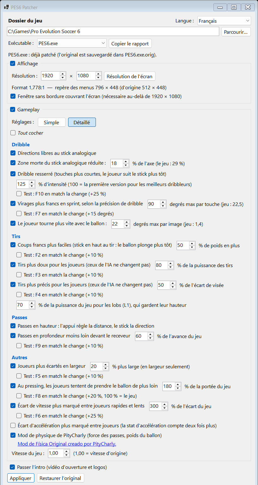

Pro Evolution Soccer 6 · PC
Écran large et gameplay moderne pour PES 6
Un patch pour Pro Evolution Soccer 6 sur PC. Il supprime l'étirement sur les écrans 16:9, 21:9 et 32:9, laisse le joueur suivre l'angle exact du stick, et ajoute des changements de gameplay en option : dribble resserré, coups francs plus faciles, tirs plus doux et plus précis, et plus d'intro au démarrage.

Ce qu'il change
Chaque option est indépendante et peut être désactivée. La plupart des options de gameplay sont réglées et testées en match ; plusieurs ont une touche de test pour trouver la valeur qui vous convient.
Affichage
Fini l'étirement
Les menus, les listes, l'interface (score, chrono, radar, noms) et le curseur de joueur gardent leurs proportions d'origine, centrés à l'écran. L'image 3D suit votre format grâce à LOD Mixer.
16:9, 21:9, 32:9…
Au-dessus de 1920 × 1080 (1440p et écrans ultra larges), le jeu s'ouvre dans une fenêtre sans bordure qui couvre tout l'écran.
Déplacement et dribble
Directions libres au stick analogique
Le joueur suit l'angle précis du stick au lieu des 8 directions d'origine, en course comme en dribble. La croix directionnelle, le clavier et l'IA ne changent pas.
Zone morte réduite
Le jeu ignore le stick dans les 29 % de chaque axe, donc le joueur court en ligne droite. Le patch la ramène à 18 % par défaut : un léger mouvement oriente le joueur. Augmentez-la si votre manette dérive.
Dribble resserré
Des touches de balle plus courtes, selon la précision de dribble du joueur : les bons dribbleurs gardent la balle plus près que les faibles. On l'active et le désactive avec F1 en match.
Virage plus rapide avec le ballon
Le jeu tourne le joueur de 1,4° par image, alors qu'une touche franche envoie la balle au loin. Désormais jusqu'à 22° par image par défaut : il suit la balle.
Virages plus francs en sprint
L'angle dont un dribbleur en sprint peut tourner la balle à chaque touche suit sa précision de dribble : les stars changent de direction net, les faibles gardent les virages du jeu.
Tirs et coups de pied arrêtés
Coups francs plus faciles
Après un tir de coup franc direct avec le stick gauche vers le haut, le ballon est plus lourd jusqu'à la touche suivante : il retombe plus tôt après le mur.
Tirs plus doux
La puissance au-dessus du tir le plus léger est réduite pour les équipes des joueurs. Les tirs de l'IA ne changent pas.
Têtes plus douces
La hauteur des têtes des équipes des joueurs est réduite, pour qu'une tête ne passe plus au-dessus de la barre. Leur puissance est gardée ; les corners et les têtes de l'IA ne changent pas.
Tirs plus précis
L'erreur de visée du jeu est réduite pour les équipes des joueurs, selon la précision de tir du tireur : un grand attaquant n'envoie plus le ballon dans les tribunes, un joueur moyen rate encore. Les lobs gardent leur hauteur.
Passes en hauteur et en profondeur
Passes en hauteur : l'appui règle la distance, le stick la direction. Les passes en profondeur sont visées moins loin devant le receveur, donc elles restent en jeu sur les ailes.
Jeu collectif
Joueurs plus écartés
Les joueurs qui se placent s'éloignent du centre de leur équipe en largeur, ce qui laisse plus de place pour dribbler et passer.
Écarts de vitesse et d'accélération
Dans PES 6, la vitesse de pointe pèse très peu : un 97 n'est qu'environ 7 % plus rapide qu'un 68. Ces options font compter la vitesse et l'accélération : un ailier rapide peut déborder un défenseur plus lent.
Pressing plus mordant
Au pressing, les joueurs tentent de prendre le ballon de plus loin, au lieu de courir à côté du porteur sans jamais le contester.
Et aussi
Passer l'intro
Plus de film d'ouverture ni de logos au démarrage. Le choix de la langue et le fichier d'options sont conservés.
Vitesse du jeu
Réglable grâce au module Speeder de Kitserver.
Mod de physique de PityCharly
En option, à télécharger séparément : le patch l'active ou le désactive pour vous dans kload.cfg.
Trois profils, ou tout régler
En mode Simple, un profil règle toutes les options de gameplay d'un coup. Pro est le profil par défaut, testé en match ; Normal aide davantage et Hardcore moins. Le mode Détaillé montre chaque option et sa valeur.
| Profil | Dribble resserré | Virages en sprint | Rotation balle au pied | Coups francs | Puissance des tirs | Écart de visée gardé | Avance des passes | Têtes |
|---|---|---|---|---|---|---|---|---|
| Normal | 150 % | 90° | 22° | +70 % | 75 % | 30 % | 50 % | 60 % |
| Pro | 125 % | 90° | 22° | +50 % | 80 % | 50 % | 60 % | 70 % |
| Hardcore | 100 % | 45° | 11° | +30 % | 90 % | 75 % | 80 % | 80 % |
Les autres options sont identiques dans tous les profils : directions libres, zone morte du stick à 18 %, passes en hauteur, lobs à 70 %, écartement à 20 %, portée du pressing à 180 %, écart de vitesse à 300 %, écart d'accélération plus marqué.
Installé en une minute
Il vous faut PES 6 sur PC avec un exécutable non protégé (un PES6.exe no-DVD 1.00 / 1.10, ou l'exe d'un patch communautaire) et Kitserver 6 avec les modules LOD Mixer et Speeder.
- Fermez PES 6 et
settings.exe. - Lancez
PES6Patcher.exe. Il demande les droits d'administrateur, car le jeu est souvent installé dansProgram Files. - Vérifiez le dossier du jeu (détecté automatiquement), l'exécutable et la résolution.
- Choisissez vos options, puis cliquez sur Appliquer.
Vos fichiers restent en sécurité
- Chaque fichier modifié est d'abord sauvegardé (
PES6.exe.orig,kload.cfg.orig…). - Restaurer l'original remet tout comme avant la première application.
- L'exe est toujours reconstruit depuis la sauvegarde d'origine : vous pouvez changer les options et réappliquer à tout moment.
- Aucun fichier du jeu n'est fourni : le patch ne modifie que l'installation présente sur votre machine.
Après l'application, ne rouvrez pas settings.exe : il ne connaît pas les résolutions au-dessus de 1920 × 1080 et remettrait l'ancienne valeur. Restez en mode fenêtré dans le jeu.
Quels exécutables fonctionnent ?
Le patch ne s'appuie pas sur des adresses fixes. Il trouve chaque emplacement grâce au code qui l'entoure et recoupe le résultat : toute version ayant le même code de jeu est patchée de la même façon, y compris les exécutables des patchs communautaires.
Fonctionne, c'est vérifié
Le patch a été éprouvé en match avec cette version.
Devrait fonctionner
Tous les emplacements ont été trouvés. Dites-nous comment ça se passe.
Rien n'est modifié
Certains emplacements n'ont pas été trouvés, souvent parce qu'une protection DVD garde une partie du code chiffrée. Utilisez un exécutable no-DVD.
Aidez à confirmer d'autres versions : cliquez sur Copier le rapport dans le patch (nom du fichier, SHA-256, ce qui peut être appliqué) et partagez-le dans le fil Evo-Web ou sur GitHub.
Communauté
Questions, retours et signalements de bugs sont les bienvenus dans le fil du forum Evo-Web et dans les issues GitHub. L'application existe en anglais et en français ; les traductions sont les bienvenues en pull request.
Crédits
Mod de Física Original creado por PityCharly (pes6_game_physics_mod). Kitserver par juce et l'équipe Kitserver.